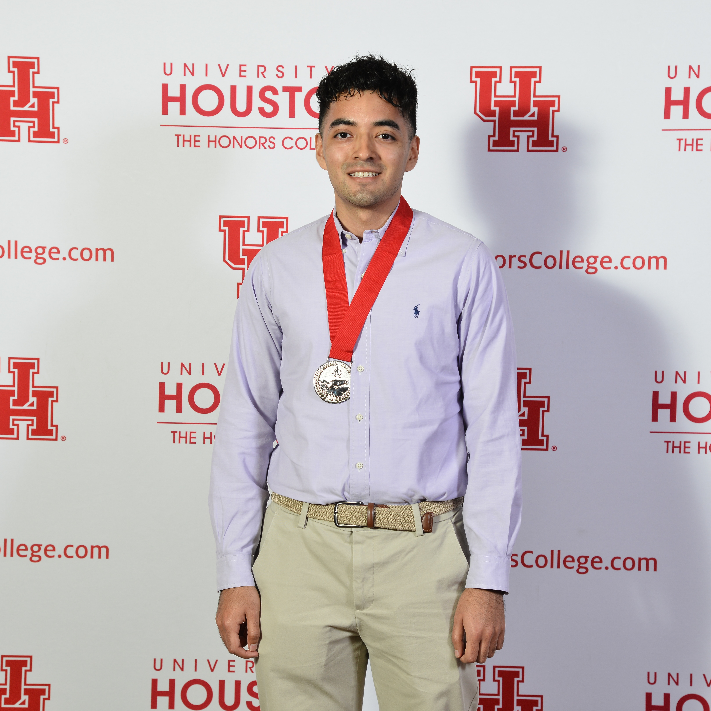

Frontend Developer | Data Enthusiast | Problem Solver
A little about me...
Hi there! I’m Alessandro, a recent Computer Science graduate from Houston who is
passionate about designing clean, responsive, and engaging web experiences.
I enjoy transforming ideas into functional interfaces and leveraging
both my software development and data analysis background to solve
problems creatively. Currently, I’m seeking opportunities as a
frontend developer where I can contribute to building intuitive digital
products while continuing to expand my technical skills.

Education
University of Houston
Bachelor of Science in Computer Science, Houston, TX, May 2025 Minors in Mathematics & Data and Society*
Relevant Coursework - Database Systems - Software Design
- Interactive Computer Graphics - Algorithms and Data Structures
- Operating Systems - Data Science and Machine Learning
Certifications - Microsoft Technology Associate: Introduction to
Programming using Java - May 2021
Skills C++ | Python | Java | JavaScript | HTML | CSS | R | MatLab
| Dart | Flutter | Firebase
Languages - English (Native Speaker ) - Spanish (Native Speaker )
Projects
Below are a selection of projects I’ve developed that showcase my skills in frontend
development, backend development, data analysis, and software development. Each project highlights my ability
to design, build, and deliver functional solutions across different technologies.
Online Portfolio Individual Project, August 2025 - Designed and developed a responsive personal portfolio website using HTML, CSS, and
JavaScript to showcase projects, education, and professional experience.
- Customized and extended an HTML5UP template to create a clean, modern UI that highlights
both frontend skills and content presentation.
- Implemented a structured project showcase with individual detail pages, enabling visitors
to explore screenshots, descriptions, and repositories for each project.
- Deployed the portfolio through GitHub Pages, achieving a fully functional, accessible
online presence to demonstrate technical skills to recruiters and potential employers.
Volunteer Matching App Team Project August 2024
- December 2024 - Co-developed a Flutter-driven mobile app with a 3-person team, implementing an
algorithm to efficiently match volunteers with events based on individual preferences.
- Collaborated with a team of 3 to design a clean, responsive front-end design applying
Material Design principles achieving consistent rendering and seamless user experience across Android and IOS.
- Led the implementation of a real-time notification system to update individual
users on event invitations, status changes, and new volunteer opportunities using
Cloud Firestore from Firebase.
Predictive Data Modeling Individual Project, August 2024 - December 2024 - Conducted statistical analysis on a large dataset in R to identify significant
predictors of performance.
- Implemented decision tree and random forest models in R to accurately predict
performance using specific attributes, achieving model with 75% accuracy.
- Performed data cleaning, feature selection, and exploratory data analysis in R
to uncover data correlations and accurately visualize trends across seven key performance metrics.
3D Dice Visualization Individual Project, July 2024 - August 2024 - Developed an interactive dice visualization program to render five polyhedral dice using Pygame.
- Mapped a single-shared number texture (.png containing values 1-20) onto each die,
including face assignments for different dice types (tetrahedron, cube, octahedron, dodecahedron, and icosahedron).
- Implemented smooth horizontal rotation and subtle vertical camera shifts in unity with Pygame,
simulating a 3D perspective changes without altering viewport.
- Created keyboard input controls for switching between five dice types, enabling on-demand
viewing of each individual die from fixed angles for debugging and player reference.
- Operate professional camera equipment at my local church during weekly service
livestream ensuring smooth video transitions and high-quality broadcasts.
- Collaborate with a four-to-five member team to set up, manage, and troubleshoot
audio-visual equipment during multi-hour livestream sessions maintaining uninterrupted broadcast quality.
Stay Connected!
I’m always open to discussing new opportunities, projects, or collaborations. Feel free
to reach out!